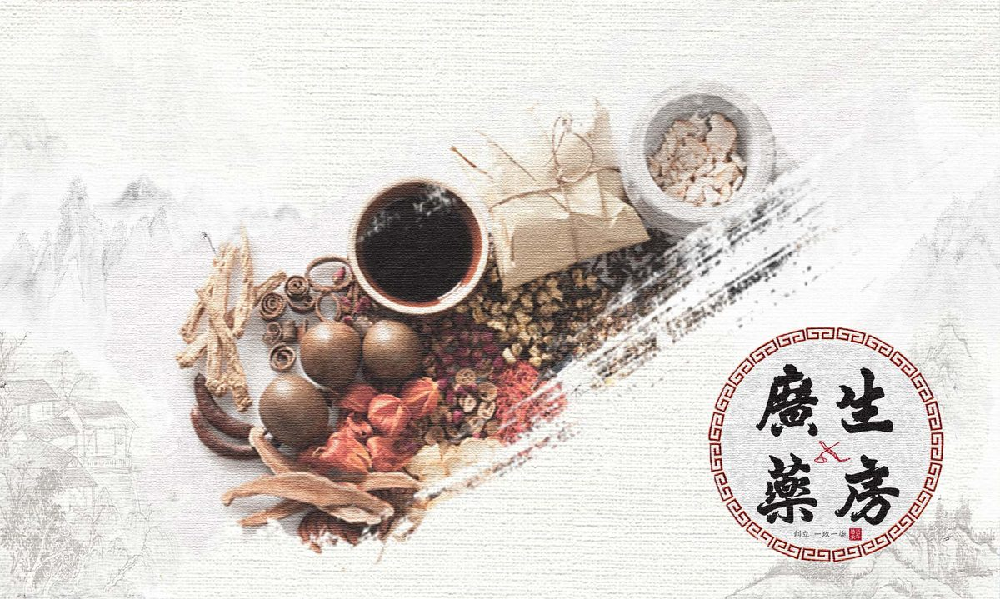
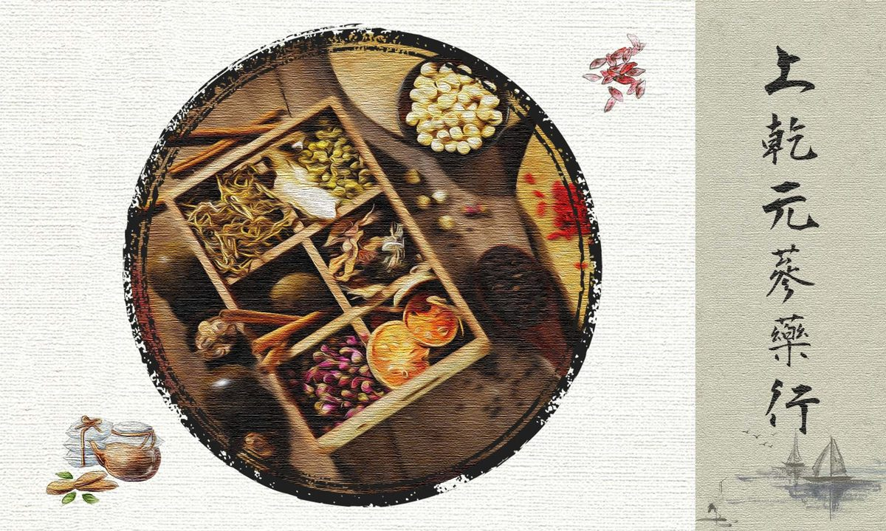
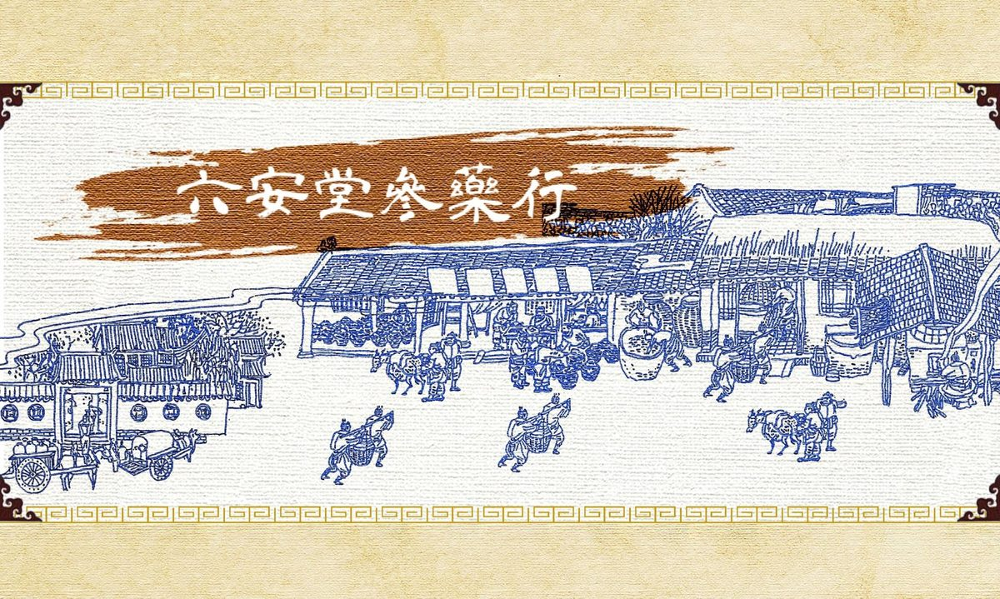
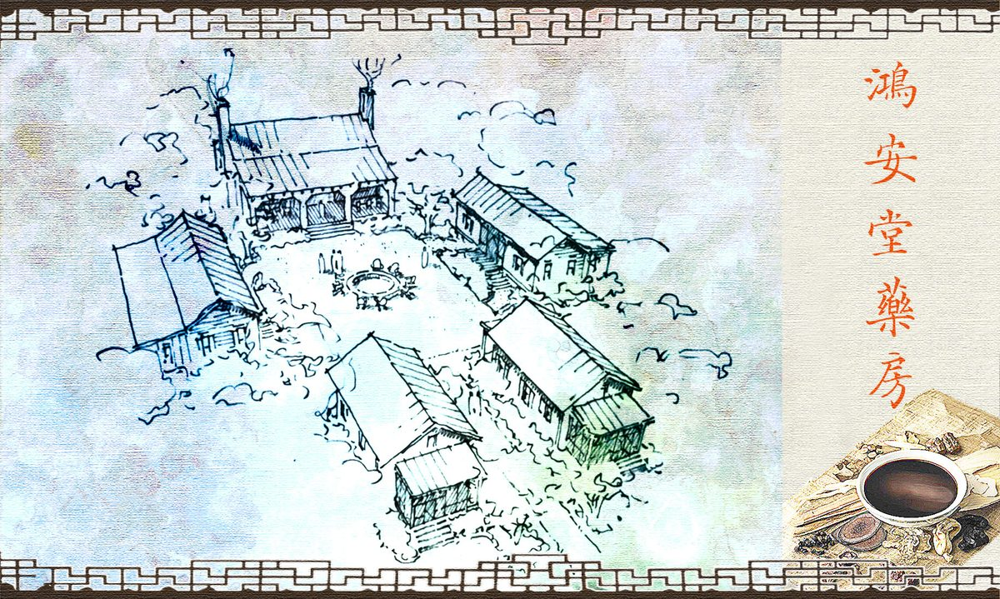
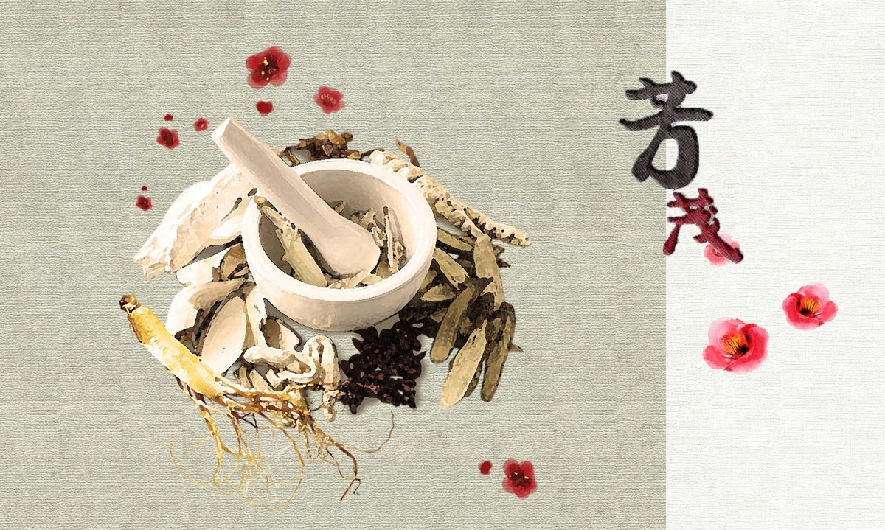
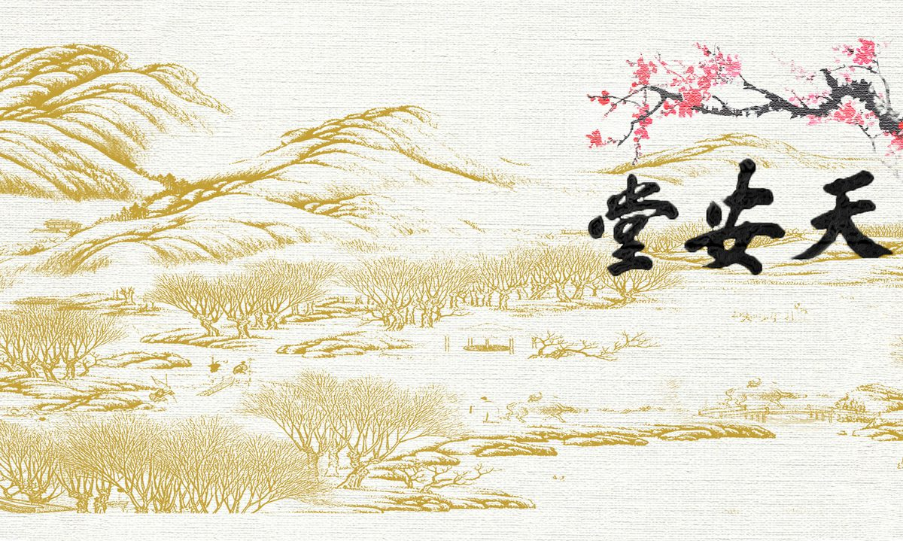
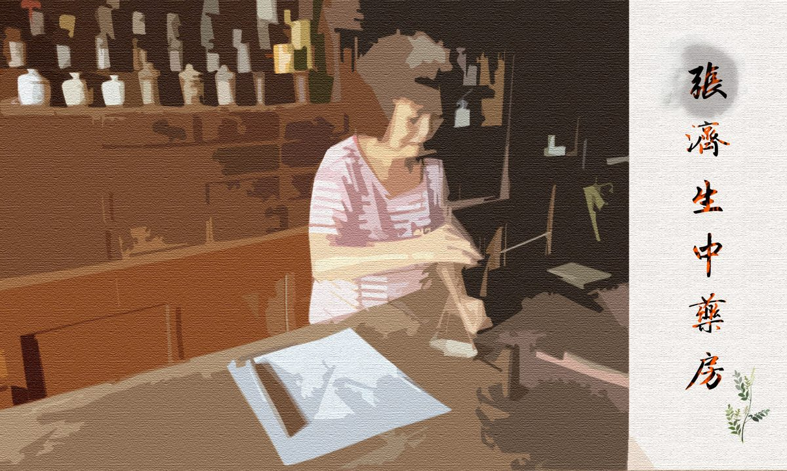
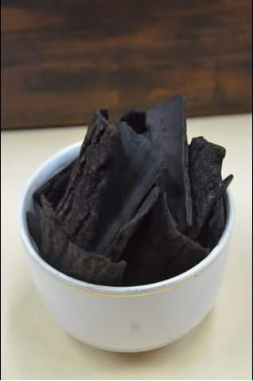

中藥行探訪走訪飄香一世紀的百年藥房
- 《百年藥櫃九帖湯》今日介紹高雄百年中藥行──高雄德興堂2021-02-08

《百年藥櫃九帖湯》今日介紹宜蘭百年中藥房── ⭐廣生藥房⭐2021-02-08
《百年藥櫃九帖湯》迪化街百年傳承中藥房── ⭐上乾元蔘藥行⭐2021-02-17- 《百年藥櫃九帖湯》今日介紹── 雙溪百年中藥房⭐林益和堂⭐2021-02-17

《百年藥櫃九帖湯》今日介紹── 迪化街百年中藥房⭐六安堂參藥行⭐2021-02-22
《百年藥櫃九帖湯》今日介紹新竹百年中藥房──⭐鴻安堂⭐2021-03-03
《百年藥櫃九帖湯》今日介紹......內湖百年中藥房── ⭐芳茂藥房⭐2021-03-03
《百年藥櫃九帖湯》今日介紹 嘉義百年中藥房──⭐朴子天安堂⭐2021-03-10
《百年藥櫃九帖湯》今日介紹嘉義百年中藥房──⭐溪口張濟生中藥房 ⭐2021-03-10 ⭐中藥行尋寶──百子櫃⭐2021-03-24
⭐中藥行尋寶──百子櫃⭐2021-03-24 ⭐中藥行尋寶──健身輾藥兩相宜：藥船⭐2021-03-29
⭐中藥行尋寶──健身輾藥兩相宜：藥船⭐2021-03-29
中藥行基本功──#炒杜仲2021-05-06